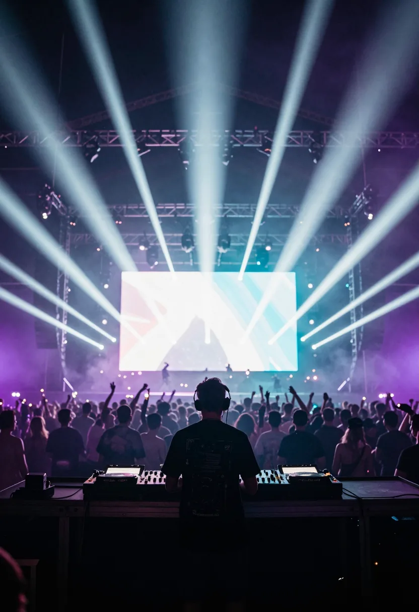
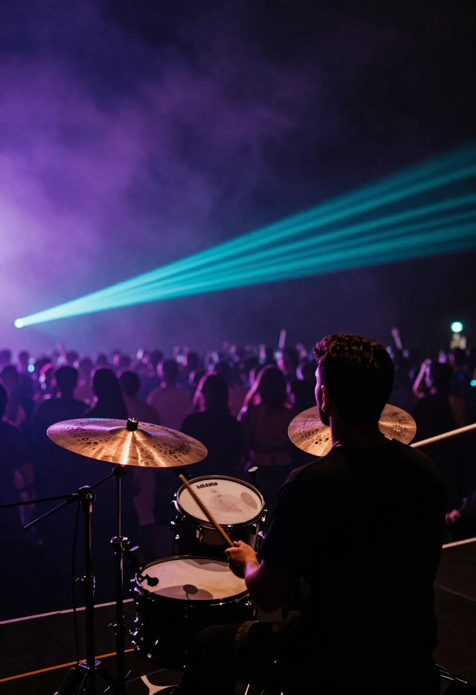
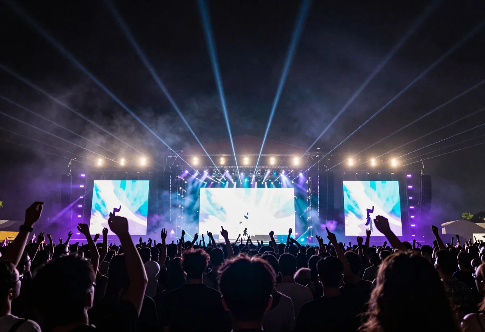
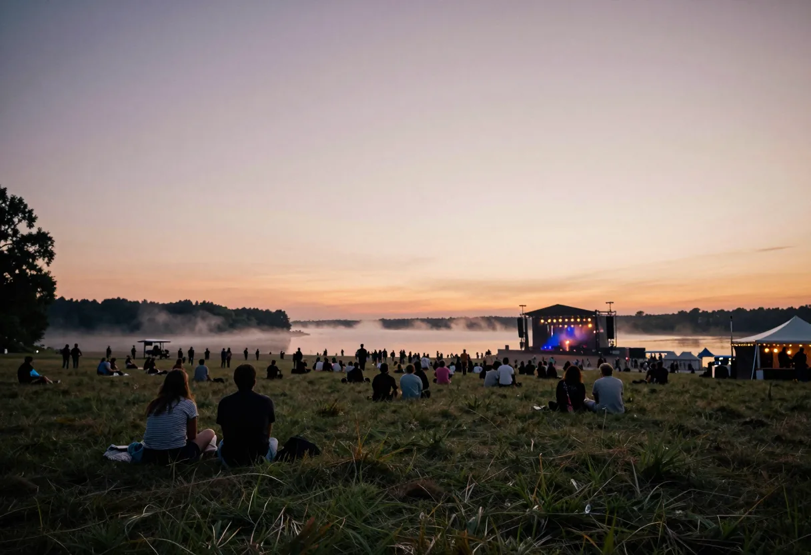

ZENITH STAGE
湖に向かって開いた主舞台。幅60mのLEDの壁と、空へ抜ける48本のビーム。00:00、ここで夜が頂点を迎える。
紫 VIOLET
NOW 開場 01 / 07
2027.07.24 SAT 18:0007.25 SUN 05:30
夜が、いちばん深くなる時刻へ。
湖畔高原 特設会場（架空） OPEN AIR · ONE NIGHT · 3 STAGES


出演者はすべて架空です。

湖に向かって開いた主舞台。幅60mのLEDの壁と、空へ抜ける48本のビーム。00:00、ここで夜が頂点を迎える。
紫 VIOLET
水面に浮かぶ舞台。光が湖に映って、二つに見える。夜明けの最後の一組はここで。
シアン CYAN
林の中の小さな舞台。木の幹をマゼンタの光が這う。いちばん近くで、いちばん大きな音を。
マゼンタ MAGENTA
空の、いちばん高いところ。夜の、いちばん深いところ。その一瞬だけ、全部の光が白になる。
¥14,800
18:00 の開場から 05:30 の夜明けまで。3つの舞台すべて。
¥7,800
23:00 から。頂点の 00:00 に間に合う。
¥3,800
03:00 から。湖の舞台で、夜が明けるのを見る。
架空のフェスのため、券は販売していません。料金も架空です。

湖畔高原 特設会場（架空の場所です）。最寄り駅から無料シャトルバスで約40分、を想定。駐車場は事前予約制、を想定。